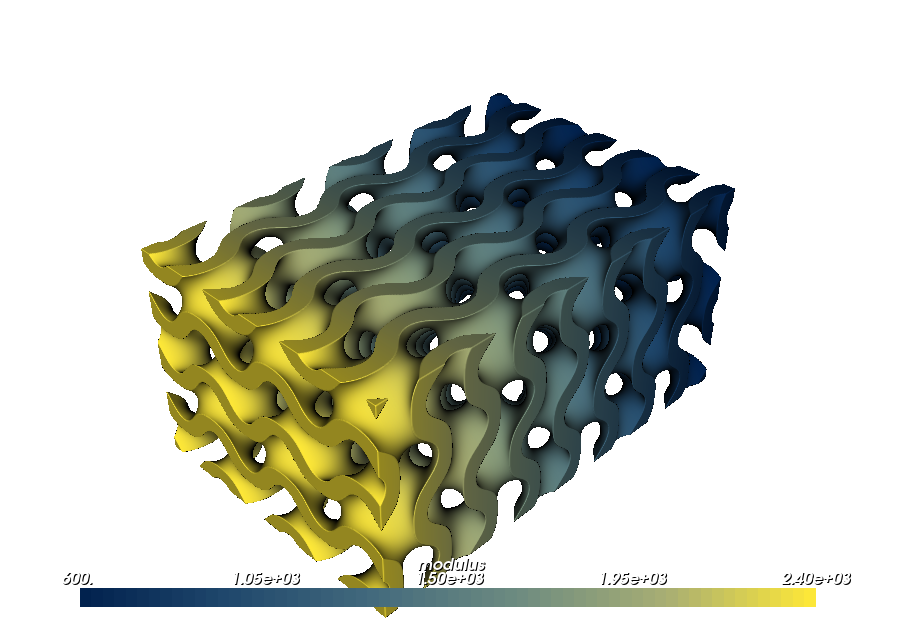
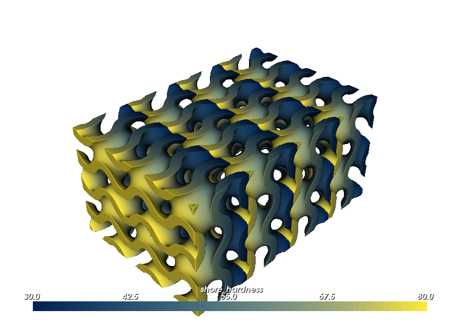
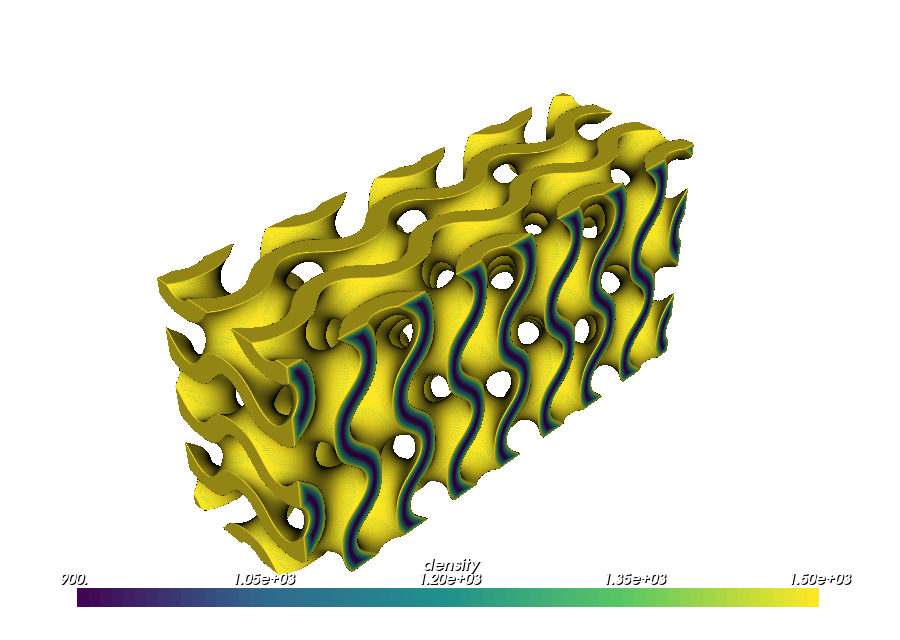
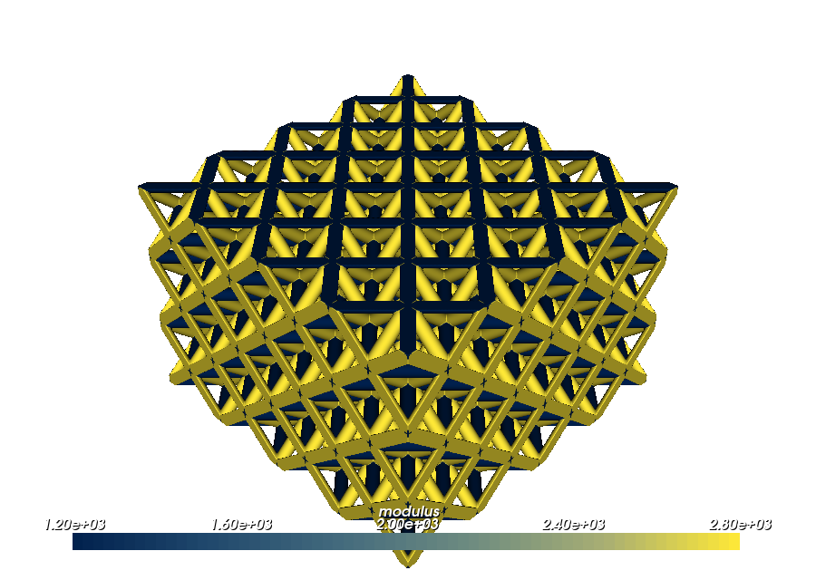
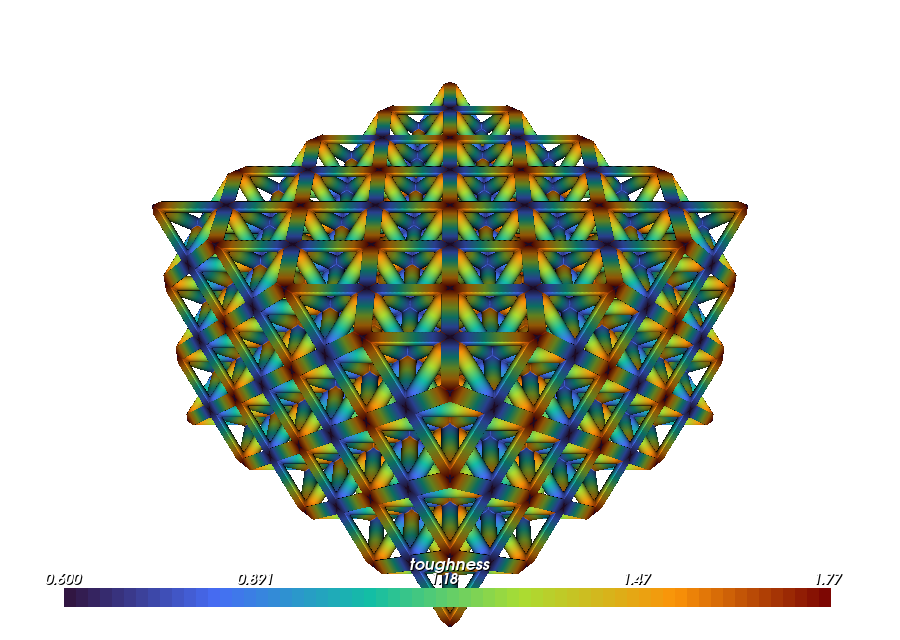
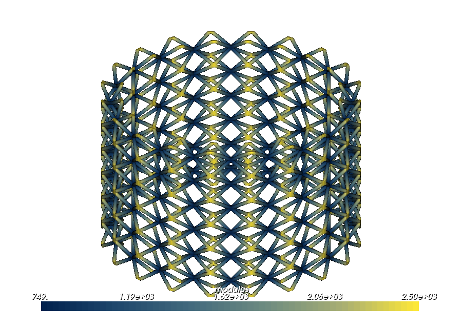

Attribute modeling for metamaterials#
The Getting Started guide explains how to attach an attribute to geometry. This guide focuses on the next design question: how should that attribute be arranged across a metamaterial?
A property can change once across the complete object, restart inside every unit cell, vary along each strut, fade from the exposed sides of a TPMS sheet toward its internal core, or switch discretely from one cell or component to the next. Those arrangements can be used for stiffness, compliance, thermal behavior, material allocation, process settings, or any other compatible attribute.
The examples use familiar scalar properties so that each arrangement is easy to see in the renderer. The important lesson is the spatial pattern, not the particular numerical values.
The three runnable examples are in
examples/metamaterials/attribute_modeling/:
The arrangement tools#
Most designs in this guide use one of these patterns:
Design pattern |
Field input |
What it produces |
|---|---|---|
Whole-object gradient |
|
one normalized gradient across the complete mapped lattice |
Repeating unit-cell gradient |
|
the same |
Cell-by-cell allocation |
|
constant integer coordinates inside each cell, suitable for discrete regions |
Selected component assignment |
|
a crisp override on chosen reusable strut or plate families |
Per-strut gradient |
|
a |
TPMS skin/core gradient |
signed distance |
two exposed sheet skins that fade toward the internal core of each TPMS wall |
"map", "cell", and "cell_index" follow the CellMap. Their meaning
therefore remains useful when the lattice is bent or mapped onto a CAD surface.
Example 1: arrange gradients on a TPMS#
01_tpms_gradient_arrangements.py
creates a 48 × 32 × 24 mm gyroid with 4 × 3 × 2 cells and a 1.8 mm
wall. The larger cells and thinner wall keep the structure open. The same TPMS
holds three different arrangements:
one stiffness gradient across the complete block;
a local compliance-related gradient that repeats in every cell;
two exposed skins that fade toward the internal core of each TPMS wall.
cell_map = mm.rectangular_cell_map(
(
pv.Vec3(-24.0, -16.0, -12.0),
pv.Vec3(24.0, 16.0, 12.0),
),
cells=(4, 3, 2),
)
root = mm.gyroid(cell_map, wall_thickness=1.8)
One gradient across the complete TPMS#
Map coordinates run from 0 to 1 across the complete cell map. This modulus
field therefore makes one continuous transition from 600 MPa to 2400 MPa,
regardless of the number of cells:
root.set_attribute(
pv.DefaultAttributes.MODULUS,
pv.FloatAttribute("600 + 1800*x"),
coordinates="map",
)
This arrangement is useful when the object should be more compliant on one
side and stiffer on the other. Changing x to y or z moves the transition
to the other map directions.
{kind=link}

Restart a gradient in every unit cell#
Cell coordinates also run from 0 to 1, but they restart inside every cell.
The following field rises from 30 to 80 four separate times along U:
root.set_attribute(
pv.DefaultAttributes.SHORE_HARDNESS,
pv.FloatAttribute("30 + 50*x"),
coordinates="cell",
)
The resulting arrangement can describe a repeated compliant-to-stiff sequence, a local material bias, or another micro-scale rule that belongs to the unit cell rather than the complete part.
{kind=link}

Grade from the exposed wall surfaces toward the core#
Expression input d is 0 on either exposed side of the TPMS wall and
negative inside it. An exponential field therefore produces two high-valued
skins with a smooth transition toward the wall core:
root.shell.set_attribute(
pv.DefaultAttributes.DENSITY,
pv.FloatAttribute(
"1200 + 300*cos(3.141592653589793*d/0.9)"
),
)
The cosine spans the complete 0.9 mm distance from either surface to the
middle of the wall. The value is 1500 at the exposed skin, 1200 halfway
through, and 900 at the core. The gradual change therefore remains visible
across the full 1.8 mm wall instead of being concentrated near its surfaces.
This is a continuous version of a discrete skin/core material assignment.
{kind=link}

The complete example attaches all three fields to the same geometry. Select
modulus, shore_hardness, or density in the renderer to compare their
arrangements.
Example 2: assign and grade individual struts#
02_strut_gradient_arrangements.py
creates a 4 × 4 × 3 octet lattice. It demonstrates two component-level
patterns:
a discrete override on selected strut families;
a continuous gradient along every individual strut.
cell_map = mm.rectangular_cell_map(
(
pv.Vec3(-18.0, -18.0, -12.0),
pv.Vec3(18.0, 18.0, 12.0),
),
cells=(4, 4, 3),
)
root = mm.octet(
cell_map,
beam_radius=0.65,
node_radius=0.8,
)
Reinforce selected strut families#
First give the complete lattice a baseline modulus:
root.set_attribute(
pv.DefaultAttributes.MODULUS,
pv.FloatAttribute(1200.0),
)
Then select unit-cell struts whose direction has a large vertical component and override only those reusable families:
steep = root.struts.where(
lambda strut: abs(strut.direction.z) > 0.55
)
steep.set_attribute(
pv.DefaultAttributes.MODULUS,
pv.FloatAttribute(2800.0),
)
The selection is discrete: a strut receives either the 1200 MPa default or
the 2800 MPa override. Because the selection acts on reusable unit-cell
components, the reinforced paths repeat automatically throughout the lattice.
{kind=link}

Direction is only one possible selection rule. Component indices, topology tags, material tags, and orientation tags can define other repeating allocations.
Make a gradient along every strut#
component_parameter runs from 0 at one endpoint to 1 at the other endpoint
of the winning strut. Mapping that field to a property range creates a separate
axial gradient on each beam:
root.set_attribute(
pv.DefaultAttributes.TOUGHNESS,
pv.FloatAttribute(0.6),
)
root.struts.set_attribute(
pv.DefaultAttributes.TOUGHNESS,
root.component_parameter.map_range(
0.0,
1.0,
0.6,
1.8,
),
)
The lattice-wide value supplies the joints. The strut override rises from
0.6 to 1.8 along every beam.
{kind=link}

This pattern can place a gradual reinforcement, coating, or compliance change
along each strut. The 0 and 1 endpoints follow the authored direction of
the reusable strut.
Example 3: carry the arrangements onto a conformal lattice#
03_conformal_gradient_arrangements.py
starts with a simple BCC unit cell. Its four body-diagonal struts receive a
smooth property profile before the cell is tiled or bent. The complete lattice
is then wrapped around the curved side of a cylinder:
cad = cq.Workplane("XY").circle(20.0).extrude(30.0)
surface = pv.CADModel.from_cadquery(
cad.faces("%CYLINDER")
).faces[0]
cell_map = mm.cell_map_from_cad_face(
surface,
cells=(20, 6, 1),
height=4.0,
linear=False,
)
root = mm.bcc(
cell_map,
beam_radius=0.35,
node_radius=0.48,
)
With 20 cells around the 40 mm-diameter cylinder, six along its 30 mm
height, and one through the 4 mm offset, the mapped cells are approximately
6.3 × 5 × 4 mm. Those closer dimensions keep the BCC units from appearing
strongly stretched after mapping.
Design the property pattern along the struts#
root.set_attribute(pv.DefaultAttributes.MODULUS, pv.FloatAttribute(2500.0))
distance_from_midspan = abs(
2.0 * root.component_parameter - 1.0
)
root.struts.set_attribute(
pv.DefaultAttributes.MODULUS,
distance_from_midspan.map_range(
0.0,
1.0,
700.0,
2500.0,
),
)
component_parameter runs from 0 to 1 along each authored strut.
distance_from_midspan is therefore 1 at either endpoint and 0 halfway
along the beam. Mapping that value to modulus makes each strut transition from
2500 MPa at both endpoints to 700 MPa at midspan. The joints keep the
endpoint value.
The four graded body diagonals together form a property arrangement inside one
BCC cell: high-valued corners surround a low-valued center. OpenVCAD tiles that
authored arrangement over the flat logical grid, then the CellMap carries
both the struts and their axial positions onto the cylinder.
{kind=link}

This differs from projecting a Cartesian gradient onto an already curved object. The gradient belongs to the reusable struts, so its endpoints and midpoints retain their design meaning even after the lattice is tiled and deformed.
Choosing the pattern#
Start from the arrangement you want to see in the finished design:
Use
"map"when the property should change once across the entire mapped lattice.Use
"cell"when the same smooth pattern should restart inside every unit cell.Use
"cell_index"when complete cells should receive discrete values or groups.Use a component selection when particular reusable strut or plate families should receive a distinct value.
Use
component_parameterwhen a field should run along each individual strut.Use signed distance
dwhen a TPMS wall needs two exposed skins that fade toward an internal core.
The scalar properties in these examples can be replaced with material fractions, temperatures, vector directions, or other attributes when the application calls for them. The coordinate and component choices are what preserve the arrangement.
Run and inspect the examples#
Run an example from the repository virtual environment:
./.venv/bin/python examples/metamaterials/attribute_modeling/01_tpms_gradient_arrangements.py
Use the renderer’s attribute selector to switch among the fields attached to the same geometry. Comparing the views is the easiest way to distinguish:
one global transition;
a transition that restarts in every cell;
a discrete component or cell allocation;
a gradient local to each strut;
a TPMS skin/core gradient.
Geometry fields such as wall thickness, beam radius, and cell spacing are covered separately in Functionally graded metamaterial geometry.